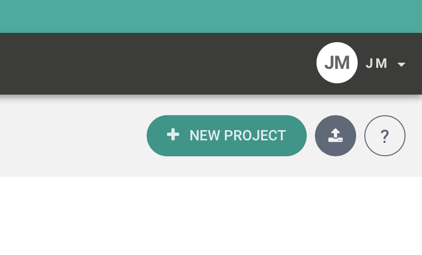
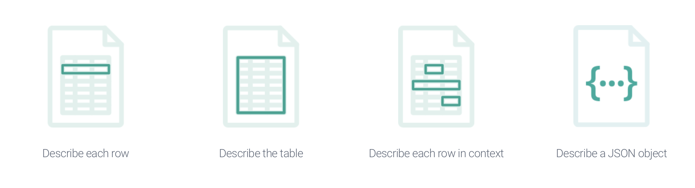
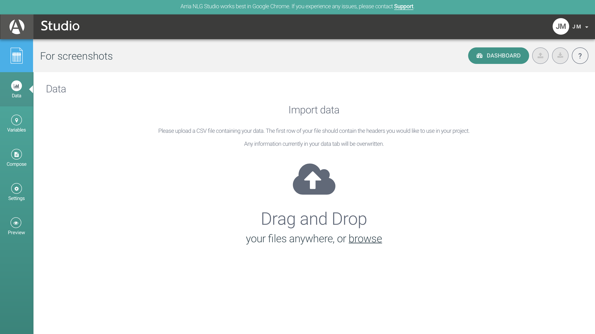
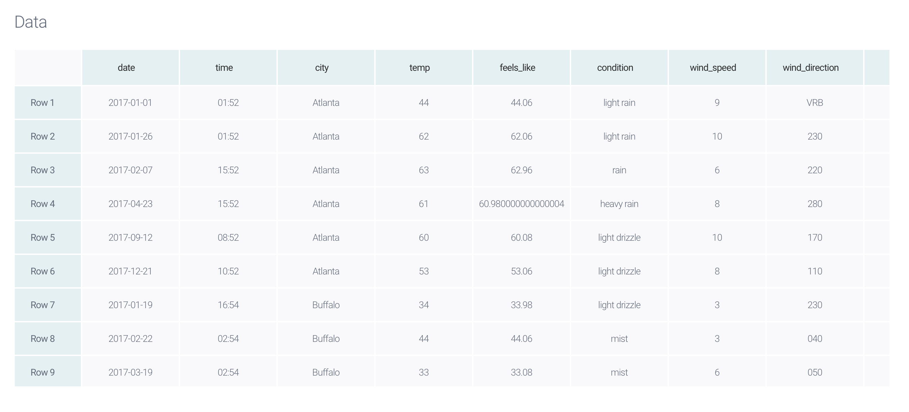

Lesson 1: Automated Writing Using Arria
While there are several programs that can be used to create stories using automated writing, this curriculum will focus on Arria. Arria is an advanced natural language generation (NLG) software that converts raw data in skillfully written narratives according to its website. We will be using Arria to learn the basic steps of automated writing but it is helpful to note that there are different software products that can be used as NLG platforms. Our goal is to teach you the steps to automated writing that can be transferable across platforms.
Step 1: Creating a New Project
Once you have logged in to Arria, click the “New Project” button featured in the right hand corner of your screen.
You will be given four options to choose from. If you hover over each option, an explanation of each option will appear to give you more context on what each choice will contain. For the sake of this training, choose the option labeled “Describe each row,” which means we will be creating a new story from each row of data that is in the spreadsheet.
Once you click on “Describe each row,” it will prompt you to title your project. Make sure that your title is clear and concise so you will be able to recognize the data set in the future. Type in your project name and click the “Let’s get started” button to continue. You will then be taken to a screen to import your data, which we will address in Step 2.
Step 2: Importing data
Before starting the process of generating stories, you will need a data set that is ready to be imported. Keep in mind, each row of your data will be treated as a separate story. The easiest and most efficient way to import your data is to have it in an Excel spreadsheet and drag that file from your desktop to the Arria screen that reads “Import data…Drag and Drop.” You will also have an option to open and browse your files, locate where you have your spreadsheet saved and import it from there.
Once your data has been successfully uploaded, your variables should be location across the top of the table and each row will be labeled: “Row 1, Row 2,” and so on.
Scroll through your data set to check for any upload errors or missing components that may be necessary to produce the desired stories.